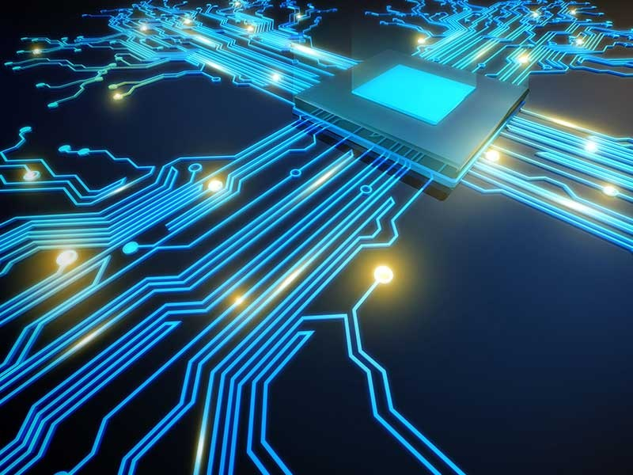

Перспективы развития компьютеной техники
уменьшение размеров компьютеров, увеличение их быстродействия и объема памяти

Перспективы развития компьютеной техники
уменьшение размеров компьютеров, увеличение их быстродействия и объема памяти
Предположительно, изменится элементная база компьютеров, будет повсеместно использоваться искусственный интеллект
«Умный дом», «умный город», использующие технологии Интернета вещей —системы взаимосвязанных вычислительных устройств, которые могут собирать и передавать данные по беспроводной сети без участия человека.
Будет повсеместно использоваться искусственный интеллект — система или машина, которая способна имитировать человеческое поведение для выполнения определенных задач, которая может самостоятельно обучаться, используя полученную информацию.
Вычислительное устройство, которое использует явления квантовой механики для передачи и обработки данных. Квантовый компьютер (в отличие от обычного) оперирует не битами (способными принимать значение либо 0, либо 1), а кубитами, имеющими значения одновременно и 0, и 1.